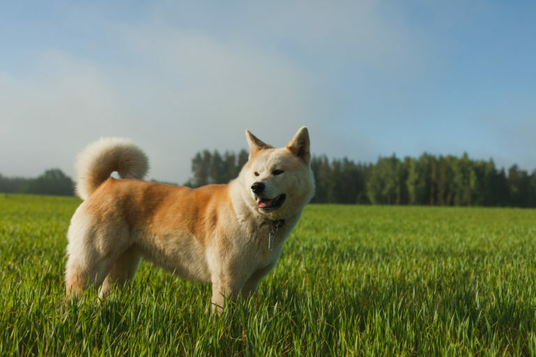
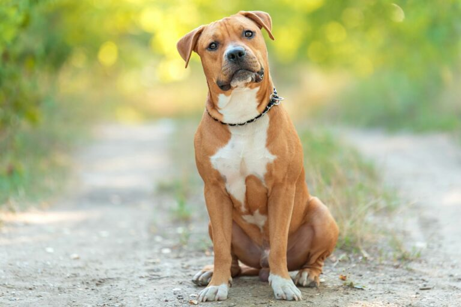

Akita Inu
El orgulloso, caprichoso y de gran tamaño perro akita, es un monumento natural en su país de origen, Japón. En sus inicios se criaba como perro de

American staffordshire terrier
El american staffordshire terrier, también llamado amstaff para abreviar, es versátil como casi ninguna otra raza. En algunos países europeos se le